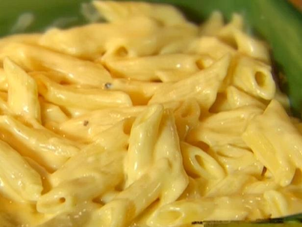

Junt's Homestyle Mac & Cheese

Ingredients:
- High Quality Pasta - 1 pound
- White Sharp Cheddar (fress shredded) - 16 oounces
- Monterey Jack Cheddar (fresh shredded) - 8 ounces
- Yellow Sharp Chedder (fresh shredded) - 4 ounces
- Cream Sauce:
- High Quality Butter (Kerigold Salted) - 4 tablespoons
- Flour - 4 tablespoons
- Heavy Cream - 32 ounces
- Powdered Mustard - 1.5 tablespoons
- Salt - 2 teaspoons
- Eggs (room temperature) - 2 eggs
Instructions:
- Break two eggs into a medium bowl and whisk. Set aside.
- Preheat oven to 400F.
- Melt butter in 6qt saucepan over medium heat.
- Bring water for pasta to boil. Salt water.
- Once butter is melted, add flour, increase to medium high heat.
- Whisk butter and flour mixture continuously over the heat. Cook until it turns the color of light sand.
- Whisk in the cream, 4oz at a time, letting the mixture absorb heat at each stage. Do not allow to come to boil.
- As soon as the final 4 oz of cream is added, before it has heated, ladle in about 1/2 cup of the cream sauce into the egg slowly while whisking the egg.
- Repeat with another 1/2 of cream, continuously whisking.
- Repeat again. Once done, mix egg and cream mixture into main pot.
- Add minced onion to cream sauce.
- Add Powdered Mustard and Salt to cream sauce. Add pepper to taste.
- Allow it to recover heat, but never let it come near a boil. Whisk continuously to keep bottom unburned.
- When it looks like it’s getting quite hot, begin adding cheese, a handful at a time. Whisk continually. Add all cheese except yellow sharp.
- Place drained pasta into large baking dish.
- Pour mixed cream and cheese sauce over pasta and mix gently with a wooden spoon.
- Spread yellow cheese on top.
- Bake in oven on one position above middle for 8 minutes.
- Change oven to high broil and broil for 4-6 minutes until cheese on top begins to turn golden.
- Remove from oven and serve immediately. It does not hold or keep well.
Source:
Red Cow Entertainment